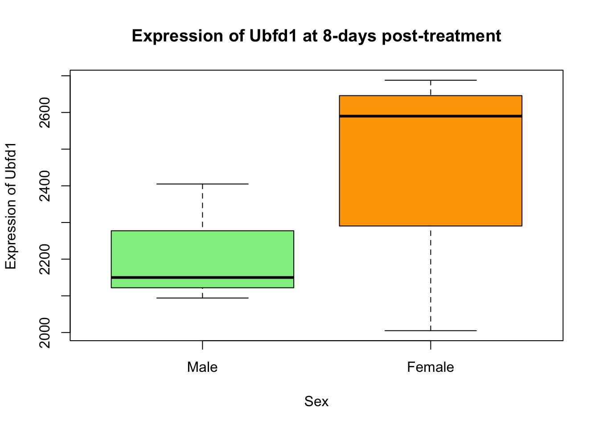

Lesson 4: Starting with your own data
This is the course handbook for WolfWorks: An introduction to R.
Objectives:
- Upload data from a
.csvfile into adata.framein R - Manipulate a
data.frameby re-naming columns and rows and converting columns between data types - Be aware of different approaches to dealing with missing data
- Export a
data.framefrom R into a.csvfile
The use-case data
For the remainder of this workshop we will be looking at real-life data from Blackmore et al. (2017), The effect of upper-respiratory infection on transcriptomic changes in the CNS. In this study, mice were treated with either (i) Influenza A virus or (ii) control saline solution. At 0, 4 and 8 days post-treatment, samples were taken from the cerebellum (brain) and spinal cord tissues and the gene expression in these tissues was measured.
The dataset is stored as a .csv file. Each row holds information for a single RNA expression measurement and the columns include various attributes associated with this measurement. Examples include:
| Column | Description |
|---|---|
| gene | The name of the gene that was measured |
| sample | The name of the sample that the gene expression was measured in |
| expression | The quantitative value of the gene expression |
| organism | The organism/species - here all data were from mice |
| age | The age of the mouse - here all mice were 8 weeks |
| sex | The sex of the mouse |
| infection | The infection state i.e., Influenze A or not infected (control) |
| strain | The strain of mouse |
| time | The duration of infection (in days) |
| tissue | The tissue that gene expression was measured in - either cerebellum or spinal cord |
| mouse | The mouse unique identifier |
Downloading and importing data
There are two ways in which you can download the data required for this workshop. Firstly, we can use the download.file() function and pass it two arguments - the url where the data is stored and the destfile where we want to save it on our local system. Remember, when giving a file path to destfile, this can be absolute or relative. If you’re using a relative filepath, make sure you know where your working directory is (since this is where the path is relative to).
The second way to download this file would be to manually visit the url and save it into our desired file from there. Since we can do it all within R, let’s do it the first way.
## Download data file into desired local destination
download.file(url = "https://github.com/carpentries-incubator/bioc-intro/raw/main/episodes/data/rnaseq.csv",
destfile = "raw_data/rnaseq_data.csv")Now that we have the file stored on our local system we can load the data into R. To do this we use the read.csv() function and pass the relative path to our file. Remember to assign the data to an object, here called rna_data.
read.csv()reads data from a comma-separated (CSV) file into a data frameread.delim()reads data from a delimited files (default is tab-delimited) into a data frame
The read.csv2() and read.delim2() functions are designed for countries that use “,” as decimal places rather than separators. Here, the separators are typically “;”.
## Load data into R as a data frame
rna_data <- read.csv(file = "raw_data/rnaseq_data.csv")As we expect, R does not give us any output from an assignment, but we should see that our data has now appeared in the RStudio environment.
Checking our understanding
To bring together everything covered in the workshop so far, please complete the three challenges below.
Tips:
- Ask for help using the
?or??notation - Be aware of missing data (NA values)
- Remember the different properties of character vs. factor data types
- Break each challenge down - think about what data you need and in what format
Challenge: Basic plotting
Re-create this plot showing the expression of Ubfd1 at 8-days post-treatment in male and female mice. Think about which data is displayed on the graph - this is the data you need from our data frame. Explore the use of the plot() function.

Solution
plotting_data <- rna_data[rna_data$gene == "Ubfd1" & rna_data$time == 8, ] #Subset relevant data
plotting_data$sex <- factor(plotting_data$sex, levels = c("Male", "Female")) #Convert sex to a factor and re-level
plot(expression ~ sex, data = plotting_data,
main = "Expression of Ubfd1 at 8-days post-treatment",
ylab = "Expression of Ubfd1",
xlab = "Sex",
col = c("lightgreen", "orange"))
Challenge: Basic statistics
Using the rna_data data set, test whether the expression of Fbxl22 is correlated with time. Explore the use of the cor.test function.
- What is the estimated correlation coefficient?
- What is the p-value?
- What is the correlation coefficient confidence interval?
Solution
statistics_data <- rna_data[rna_data$gene == "Fbxl22", ] #Subset relevant data
cor.test(x = statistics_data$expression, y = statistics_data$time) #Carry out correlation test##
## Pearson's product-moment correlation
##
## data: statistics_data$expression and statistics_data$time
## t = -8.6595, df = 20, p-value = 3.357e-08
## alternative hypothesis: true correlation is not equal to 0
## 95 percent confidence interval:
## -0.9530869 -0.7465614
## sample estimates:
## cor
## -0.8885065plot(expression ~ time, data = statistics_data, #Create plot to visually verify result
main = "Correlation between expression of Fbxl22 and time",
xlab = "Expresssion of Fbxl22",
ylab = "Time post-treatment (days)")